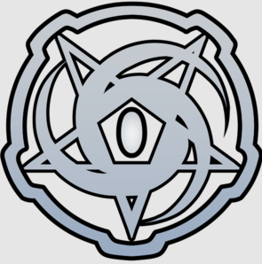

| No | Jenis Link | Penjelasan | Output / Hasil |
|---|---|---|---|
| 1 | Link Absolut | Link yang mengarah ke alamat penuh (URL lengkap). | |
| 2 | Link Relatif | Mengarah ke file lain dalam folder/project yang sama. | About Rumput |
| 3 | Internal Link | Link menuju bagian tertentu di halaman yang sama. | Lompat ke Bagian 1 |
| 4 | Scroll ke Bawah | Mengarah ke bagian bawah halaman (id="bottom"). | ke Bagian Bawah |
| 5 | Link Map | Membuat area tertentu dari gambar menjadi tombol/link. | Lihat Disini |
| 6 | Link Gambar | Gambar dijadikan hyperlink yang bisa diklik. |  |
| 7 | Target Link | Link dengan target tertentu (misal: _blank = tab baru, _self = tab saat ini). | Wikipedia |
| 8 | Link Email | Membuka aplikasi email untuk mengirim pesan. | Kirim Email |
| 9 | Link Telepon | Menghubungi nomor telepon (khusus mobile). | Telpon |
| 10 | Link SMS | Mengirim SMS ke nomor tertentu (khusus mobile). | Chat via WhatsApp |
| 11 | Link Download | Mendownload file langsung ke perangkat. | Download |
Ini adalah bagian yang dituju dari internal link di tabel.
Kembali ke Atas{kind=link}